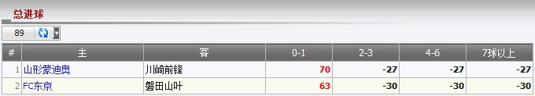

总入球
定义:
显示总代理基于注单占成数的输赢, 投注类型之: 总入球. 这份报告分开每场赛事交易。

图 1.1
- 从上图中:
- 第一投注: 会员投注于赛事 山形蒙迪奥 -vs- 川崎前锋, 投注额 = 90, 赔率 = 3.6, 总代理占成 = 30%, 会员选择: 0-1 为最后比分。 根据这些信息, 我们能够计算总代理输/赢如下:
若 比分: 0-1 --> 总代理会输 = (赔率 - 1) * 投注额 * 总代理占成 = (3.6 - 1) * 90 * 30% = 70.
若 比分: 2-3, 4-6, 7球以上 --> 总代理会赢 = -投注额 * 总代理占成 = -90 * 30% = -27.
-
第二投注: 会员投注于赛事 FC东京 -vs- 磐田山叶, 赔率 = 100, 投注额 = 3.1, 总代理占成 = 30%, 会员选择: 0-1 为最后比分。 根据这些信息, 我们能够计算总代理输/赢如下:
若 比分: 0-1 --> 总代理会输 = (赔率 - 1) * 投注额 * 总代理占成 = (3.1 - 1) * 100 * 30% = 63.
若 比分: 2-3, 4-6, 7球以上 --> 总代理会赢 = -投注额 * 总代理占成 = -100 * 30% = -30.